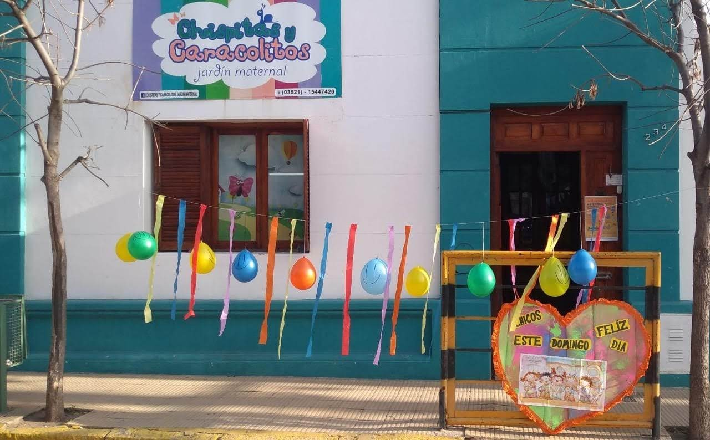
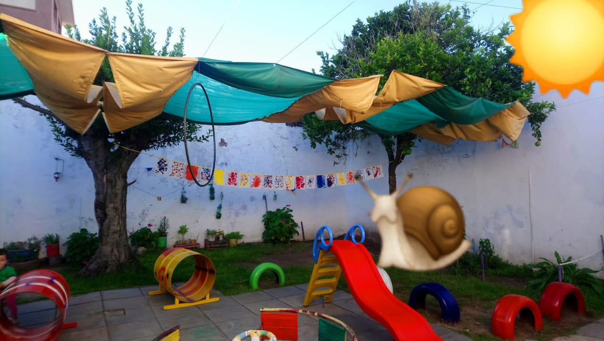
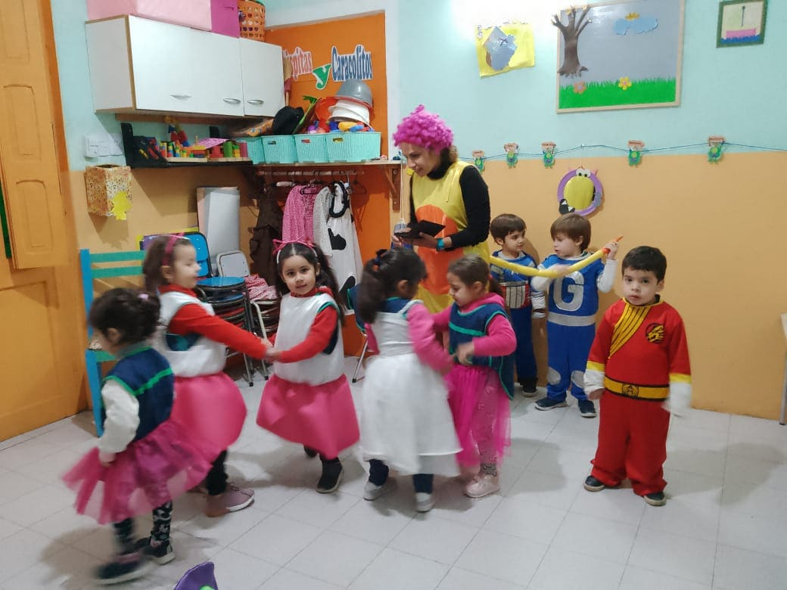

Bienvenidos
Bienvenidos a "Chispitas y Caracolitos", un jardín donde la alegría y la sabiduría se unen en armonía. Descubre un mundo mágico lleno de aventuras, amistad y valiosas lecciones. ¡Sumérgete en la magia de este encantador lugar!
El jardin
Nuestro Jardín Maternal Chispitas y Caracolitos es una Institución Privada que desde hace 17 años tiene la dicha de ser el lugar donde cada niño y niña que pasa por nuestros mágicos rinconcitos aprende jugando, felices y siendo personitas únicas y autónomas.
Enfoque educativo
Creemos en un enfoque educativo que se basa en el juego y la exploración. En "Chispitas y Caracolitos", fomentamos la curiosidad natural de los niños, permitiéndoles descubrir el mundo que les rodea a través de experiencias significativas y divertidas. Nuestro equipo de educadores altamente capacitados utiliza métodos pedagógicos innovadores para promover el desarrollo cognitivo, emocional, social y físico de cada niño.
Quienes Somos
En Chispitas y Caracolitos tu hijo/a podrá crecer al lado de Seños que los acompañarán a través de este proceso, con amor y con una mirada dulce y empa'tica hacia cada pequeño. Cada Docente de Sala posee el Título de Profesora de Nivel Inicial, como así también las profesoras tienen su Título en cada una de las Áreas Especiales.